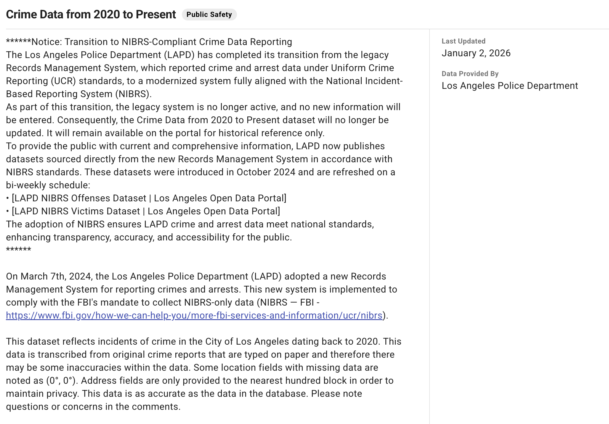
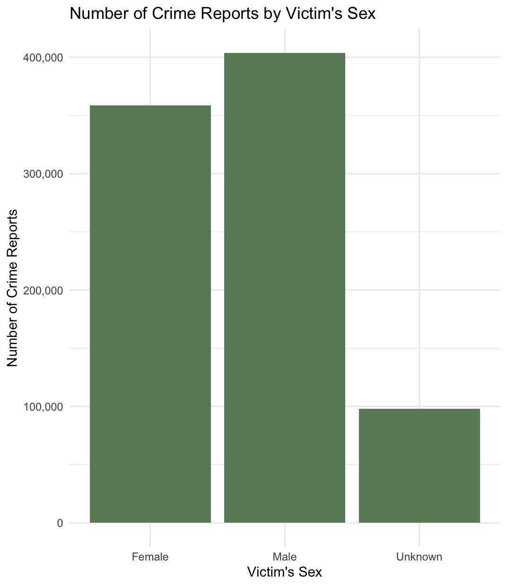
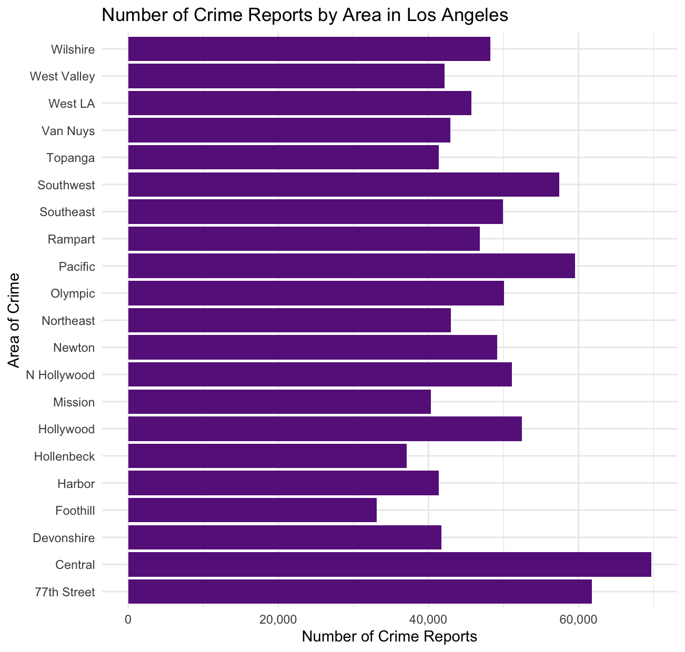
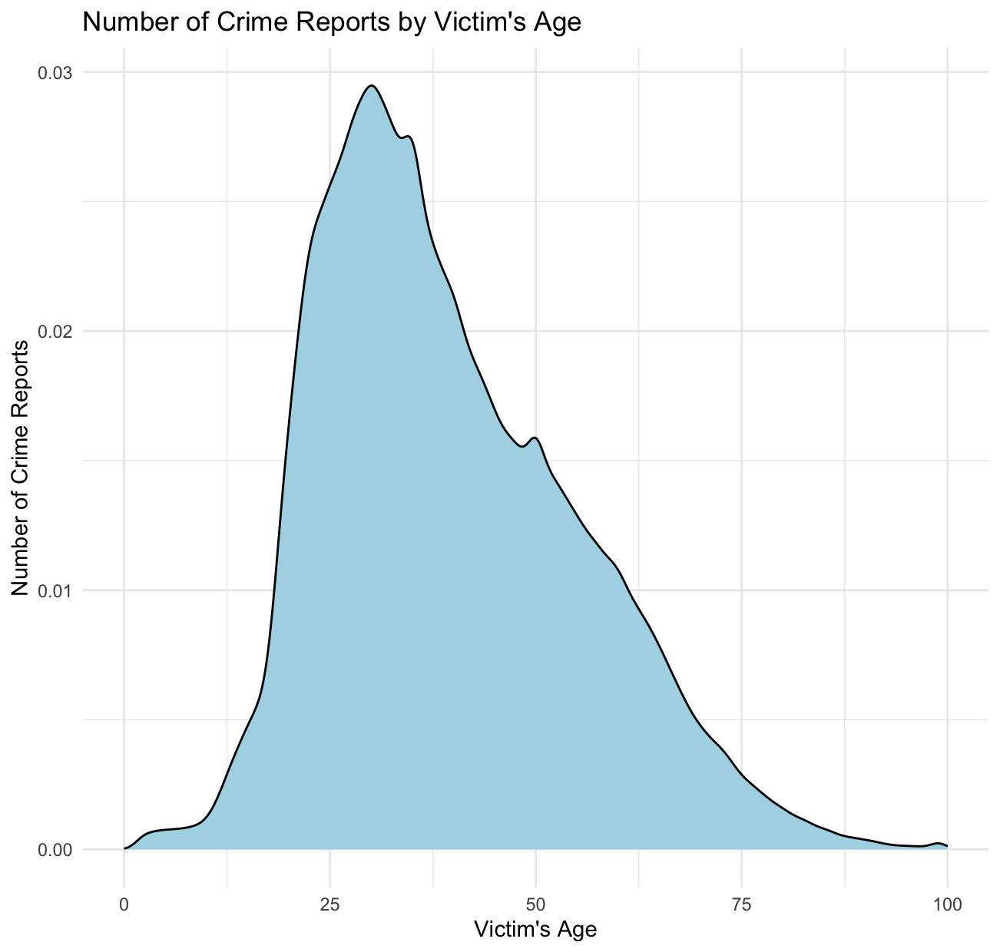
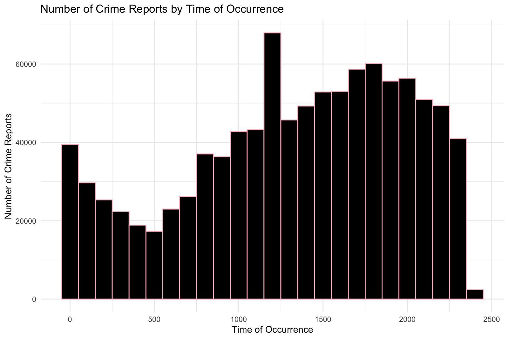
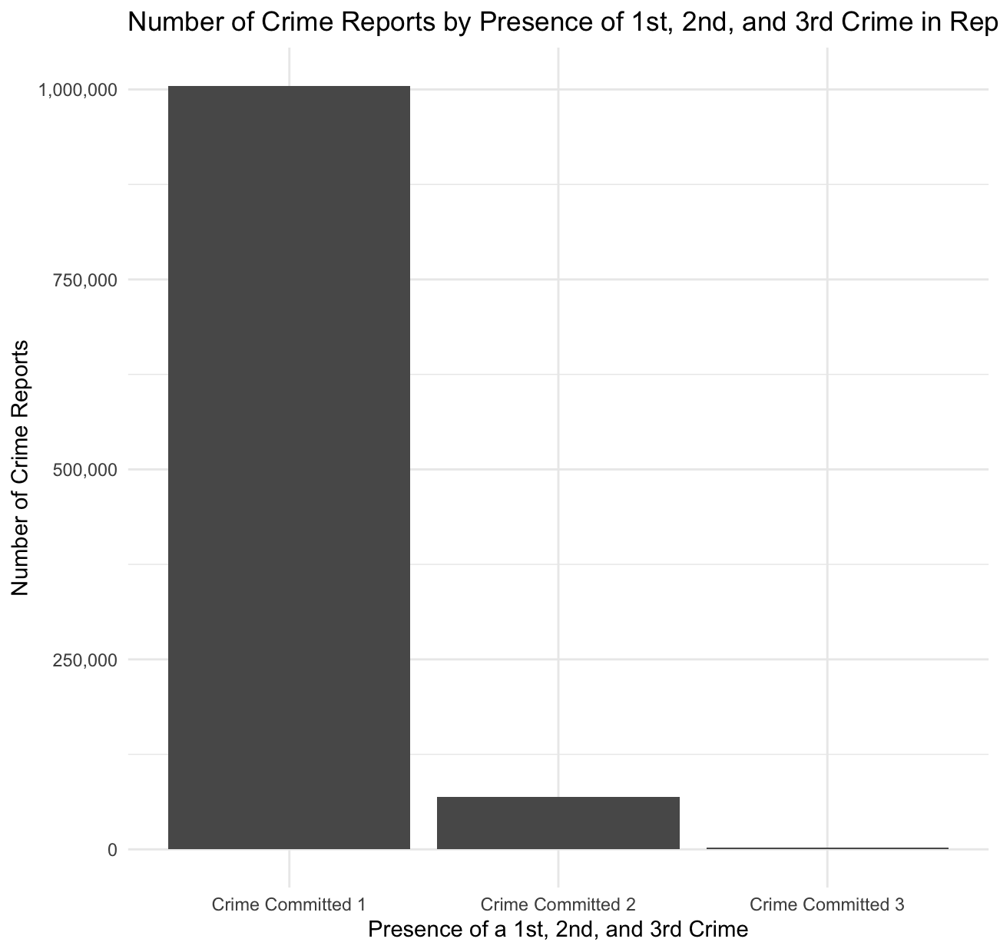
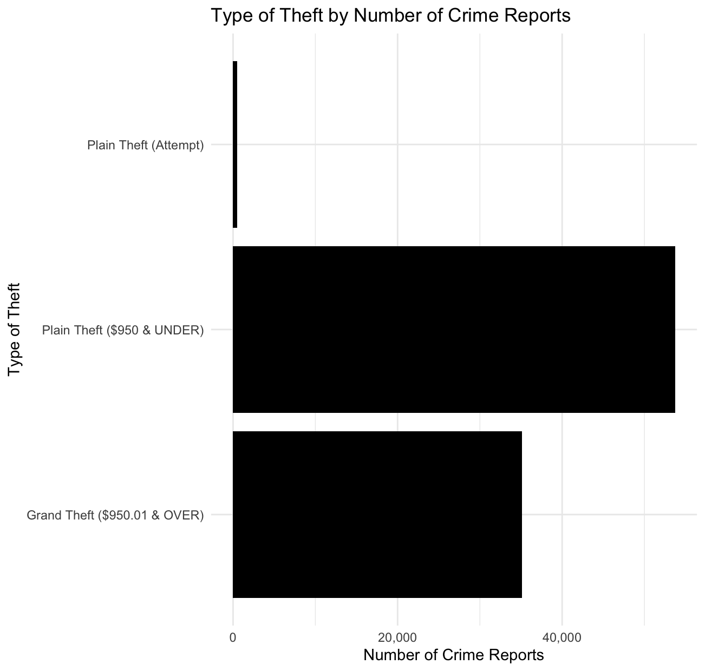
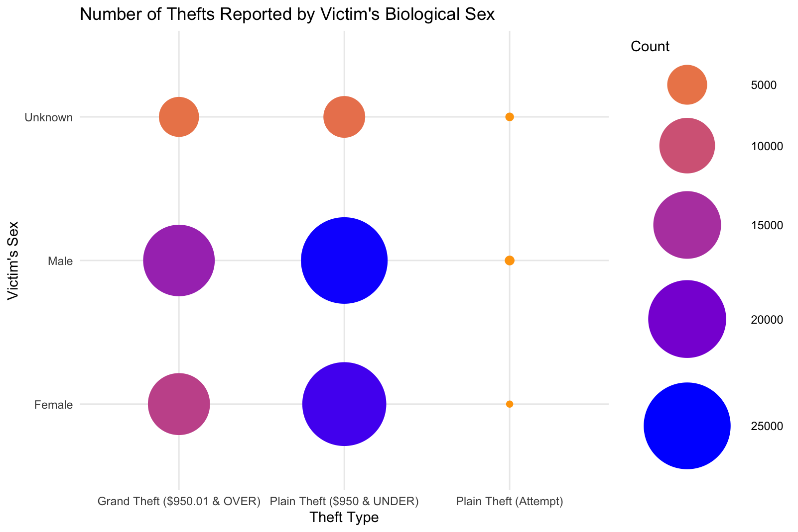
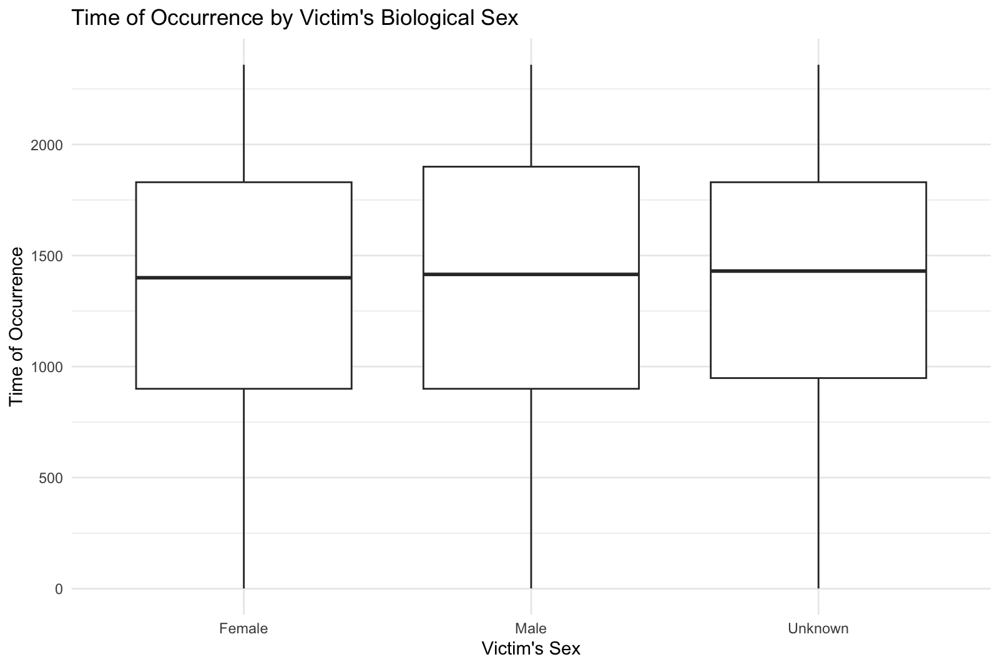
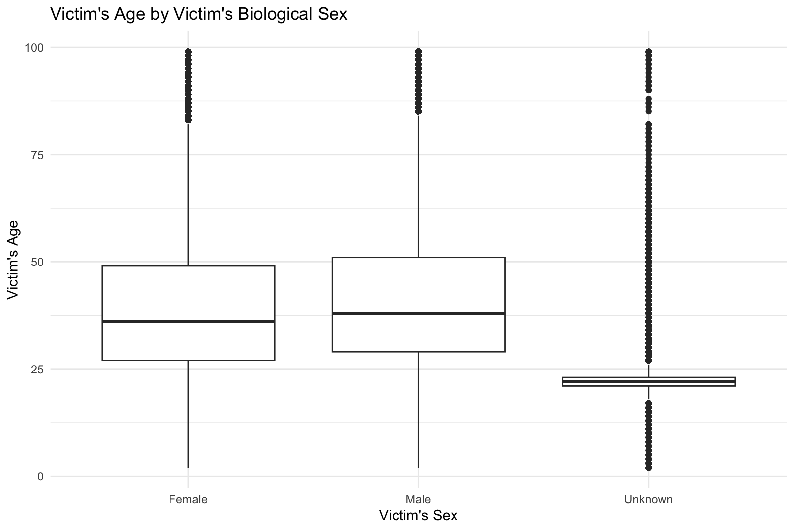

In this article, we will be using a data set provided by the Los Angeles Police Department (LAPD). The dataset includes crime reports in Los Angeles starting in the year 2020. The data collection ends at approximately March 7th, 2024 when the LAPD transitions to a new records management system compliant with FBI standards. Some notable variables that will be used in our analysis include victim's biological sex, victim's age, area of crime, crimes involving theft, and time the crime occurred. Additionally, unit of observation is crime reports. Overall the dataset includes a little over 1,000,000 crime reports. It is important to note that the data set is comes from data that is originally handwritten by the police officers who are taking the crime report. This makes the data susceptible to bias in the reporting by the police officers themselves and potential errors from the transition of the handwritten data to computerized dataset. If you want to use this data set or simply learn more then go to the Los Angeles Open Data Website. You can view a quick screenshot by using the button below!

To access the conducted data analysis consult my GitHub page. Additionally, All plots are interactable, simply hover over part of the plot you would like to see more statistical information on. For example, if you hover over a bar on the bar plot you will be given the exact number of crime reports.
Summary Statistics:
Frequency: Female - 358,580, Male - 403,879, Unknown - 97,773
This dataset has three categories for the biological sex of the victims: female, male, and unknown. Female sex accounts for approximately 42% of the data set, the male sex approximately 47%, and the unknown sex approximately 11%. This suggests that men are more likely to be victims of crime. We can see this visualized below in the bar graph the shows the count by gender, rather than the percentage.

The data set has categorize 21 different areas of Los Angeles where crime has occurred. These areas and their percentage of the data set are recorded as following: 77th Street 6%, Central 7%, Devonshire 4%, Foothill 3%, Harbor 4% Hollenbeck 4%, Hollywood 5%, Mission 4%, North Hollywood 5%, Newton 5%, Northeast 4%, Olympic 5%, Pacific 6%, Rampart 5%, Southeast 5%, Southwest 6%, Topanga 4%, Van Nuys 4%, West LA 5%, West Valley 4%, and Wilshire 5%. Below is a graph that shows the number of crime reports by area. the Central area of Los Angeles has the highest percentage of 7% with 69,670 crime reports. You can consult the graph to see the exact number of crime reports by area.

Within the dataset, the average victim's age is 39.51 years old with a median of 37 years old. It has a minimum age of -4, but since this is illogical I have filtered out all values 0 under for our plot. Additionally, the maximum age value is 120, but since there is only one person in the dataset to be this age and only one person in documented history to reach 120 we will remove this observation. The density plot shows the distrbution of total crime reports in the data set across the ages. In the plot, there is a peak at approximately the age 30, suggesting that is the age someone is most likely to be a victim of a crime.

The average time of occurence of a crime is 1:40PM with a median of 2:20PM. This suggests that a a large amount of crime takes place mid day during daylight. To read the plot below, time is in military time without a colon. The time that has the most crime reports is 12:00PM.

In the crime reports, they have a process of listing the number of crimes in one report, often with the first one listed being the most serious. The primary crime is always listed at crime committed 1, with any subsequent crimes committed listed after as 2, 3, or 4. We are able to best visualize this through our plot. Since all crime reports have a primary crime, the category of crime committed 1 consists of every observation in the data set. Out of ~1,000,000 reports, only ~70,000 have a secondary crime, and only ~2,300 have a third crime.

For the purpose of our analysis, we will focus on three types of theft crime reports: grand theft of over $950.01 (excluding guns, fowls, livestock, produce), plain theft of under $950, and attempted plain theft. When the data is filtered down to only these three categories, grand theft account for approximately 39%, plain theft approximately 60%, and attempted plain theft approximately 1 percent. We can see this visualized in the graph.

In this plot where orange plus small circle is a lower number of theft reports by sex and blue plus large circle the higher number. We are able to effectively visualize what types of thefts and which sexes are more likely to be a victim of theft. All sexes are most likely to be victims of plain theft, with men being marginally more likely to be reported victims. The male sex being most likely to be the victim is something we see across all forms of theft reports in this plot. Its important to note that people being labeled as the unknown sex are highly underrepresented in the data set, and we cannot be exactly sure who exactly is being put into this category as it is not elaborated upon by the LAPD. Additionally, we cannot be sure if the LAPD officers are conflating gender and sex when making these reports.

This boxplot showing time of occurrence by victim's sex shows little difference across the sexes. The medians are only marginally different for the female, male, and unknown sex at 2:00PM, 2:15PM, and 2:30PM respectively.

This boxplot showing victim's age by victim's biological sex similar to the above plot shows little diffence between the female and male sex, with a female victim more likely to be a few years younger than their male counterpart. However, the unknown sex is much younger with a median victim age of 22, 16 years younger than median age for the a victim.

The multivariable graphs above suggest that there is a potential relationship between certain variables. To test this, we would have to use statistical methods such as linear regression, ANOVA, etc., but for now here are three potential hypothesis that could by investigated.
1. Victim's biological sex will have an effect on theft types established in our single variable analysis in above section.
2. Victim's biological sex will have a correlation with time of crime occurrence.
3. Victim's biological sex will have a correlation with victim's age.